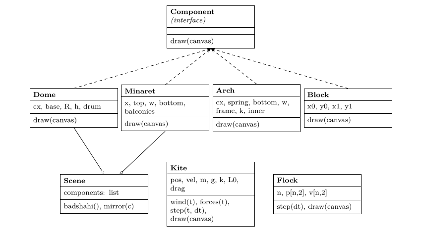
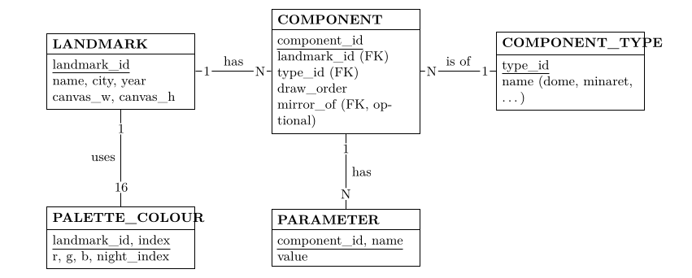

6. The design as diagrams¶
The program is small, but it already has the shape of larger ones: data describing a scene, components that draw themselves, simulations that advance in time, and a loop that ties them together. Diagrams make that shape visible before the code grows. Each kind answers a different question.
6.1 Class diagram: what the parts are¶
A UML class diagram shows each kind of object, the numbers it holds (attributes) and what it can do (methods). Figure 6.1 shows the program’s classes. The four building components share one method, draw(canvas), so the scene can draw any of them without knowing which it is; this is what programmers call an interface. The kite and the flock add step(dt), which advances the simulation by a time step.

Figure 6.1. Class diagram. Dashed arrows: each building part implements the Component interface. Open diamonds: the scene is an aggregation of components (Arch and Block are aggregated in the same way; their lines are omitted for clarity).
6.2 Data-flow diagram: how data moves¶
A data-flow diagram (DFD) ignores classes and follows the data: where it comes from, which processes transform it, and where it is stored. Figure 6.2 shows one frame. Parameters (the scene list, palette, constants) are stored data; the clock supplies time; processes turn them into a grid of indices and finally into an image file.

Figure 6.2. Level-1 data-flow diagram for one frame. Circles are processes, open boxes are stores, bold boxes are external entities.
6.3 Entity–relationship diagram: the scene as data¶
Because the scene is a list of parts, it could live in a table or database instead of code: change a row and the mosque changes. An entity–relationship diagram (ERD) designs those tables. Figure 6.3 shows one design: a landmark has many components; each component has a type and its own numbers; a component may be the mirror of another. Adding Government College’s tower or the Lahore Museum would mean new rows and perhaps a new component type, not new drawing code for the scene.

Figure 6.3. Entity–relationship diagram for storing landmarks as data. Underlined fields are keys; FK marks a foreign key, a reference to a row in another table. The optional field mirror_of links a component to the one it mirrors, in the same table.
6.4 Which diagram when¶
| Diagram | Question it answers here |
|---|---|
| Free-body (Figure 5.1) | Which forces act on a body, and in which directions? Draw before writing forces(). |
| Class (Figure 6.1) | What kinds of object exist, what they hold and what they can do? |
| Data flow (Figure 6.2) | Where does each piece of data come from and go to in one frame? |
| Entity–relationship (Figure 6.3) | How would the scene be stored as tables so it can be edited without code? |